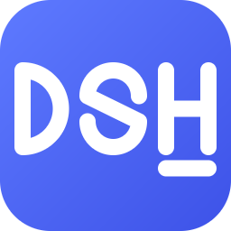
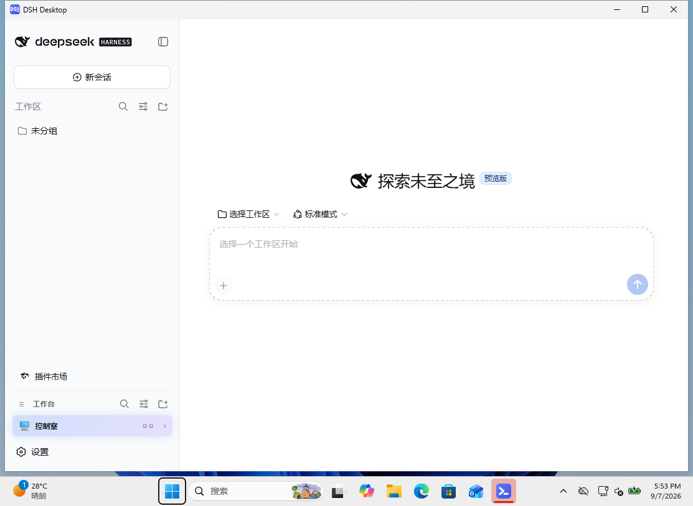

DSH Desktop Community app · unofficialA community Windows desktop app for DeepSeek Harness (dsh): bundled Node.js runtime, zero dependencies, one-click install, 11 community plugins preinstalled.

It turns DeepSeek Harness from a command-line tool into a desktop app you double-click.
Ships a portable Node.js 22 LTS, the dsh engine and pnpm. Your machine needs no Node.js or any dev tooling — install and go.
NSIS installer into your user folder, no admin rights. First launch self-extracts the runtime (1–3 min, once); every start after that takes ~8 seconds.
Project worktable, long-term memory, in-app marketplace, visual bridging, keyless web search, multi-agent teams, context stats, phone pairing, terminal UI — ready when you are.
Closing the window minimizes to the tray. From the tray menu: restart the engine, open the TUI terminal, jump to the workspace or logs.
Your API key and all data live in %APPDATA%\DSH Desktop\. The engine listens only on loopback with an access token; agent file operations stay inside the workspace you choose.
Follows the upstream brand guidelines: the ecosystem-recommended DSH abbreviation and an original "DSH_" wordmark in DeepSeek blue (#4D6BFE). No official logo is used.
Both variants share the exact same shell and runtime — they differ only in preinstalled plugins.
@dsh-market/plugin brings the graphical marketplaceBrowse all versions on the Releases page.
No terminal required (except for plugins on Lite).
%LOCALAPPDATA%\Programs) and creates "DSH Desktop" shortcuts on the desktop and Start Menu.Installing plugins on Lite: run "%APPDATA%\DSH Desktop\runtime\bin\dsh.cmd" plugin --profile web add @dsh-market/plugin and restart the app to get the marketplace. More details in the Lite release notes.
Each plugin is installed and smoke-tested at build time; see vendor/plugin-report.json for the build report.
| Plugin | Capability | Status |
|---|---|---|
dsh-worktable 0.3.0 | Project worktable: sidebar drawer + dockable splits + control-room board | ✓ Active |
dsh-memory-plugin | Cross-session long-term memory (memory_* tools) | ✓ Active |
@dsh-market/plugin | Sidebar marketplace for more plugins | ✓ Active |
@liustack/modlens | Visual bridging | ✓ Active |
@liustack/modsearch | Keyless web search | ✓ Active |
@nanmicoder/dsh-agent-teams | Multi-agent team collaboration | ⊘ Installed, inactive * |
dsh-context | Context statistics panel | ✓ Active |
dsh-pocket | Phone pairing (LAN + PIN protected) | ✓ Active |
dsh-tui | Fullscreen terminal UI (tray entry) | ✓ Active |
archify | Repository architecture diagrams | ⊘ Installed, inactive * |
aegis | Software engineering methodology | ⊘ Installed, inactive * |
* These three have API incompatibilities with the bundled dsh 0.1.2-rc.1 (they would crash the engine), so they are installed but inactive by default. Enable them in-app once upstream adapts — see the repo README.
Desktop shell + bundled engine, clean process boundaries, clean uninstall.
┌─ Electron window ─────── loads http://127.0.0.1:<port> (DSH Web UI)
│ · dsh-worktable: sidebar drawer + dockable splits + control room
│ · @dsh-market/plugin: marketplace (install more plugins online)
├─ Electron main ───────── lifecycle / tray / first-run wizard / logs
│ └─ child: runtime\bin\dsh-web.cmd (generated launcher)
└─ Bundled engine ──────── portable Node 22 LTS + @deepseek-ai/dsh + pnpm
└─ data dir %APPDATA%\DSH Desktop\ (self-extracts vendor.zip on first run)
Didn't find your answer? Ask in Issues.
No. The runtime (Node 22 LTS + dsh + pnpm) ships inside the installer. No development environment is needed on your machine.
Pick Full for an out-of-the-box experience; pick Lite to keep it lean and cherry-pick plugins. The cores are identical, and Lite can install any plugin (including the marketplace) via the bundled CLI at any time.
Locally, in %APPDATA%\DSH Desktop\dsh-home\.env. It is only used by the engine on your machine to call the model API — no third party in between. Don't share that file; rotate test keys on the DeepSeek platform when done.
They currently have API incompatibilities with the bundled dsh 0.1.2-rc.1 that would crash the engine, so they ship installed but inactive. The files are in place; enable them in-app once upstream adapts.
Uninstall DSH Desktop from Windows Settings → Apps (shortcuts are removed too). The data folder %APPDATA%\DSH Desktop\ is kept by default (it holds your API key and history) — delete it manually if you no longer need it.
No. DSH Desktop is an independent community project, not affiliated with DeepSeek. It uses the ecosystem-recommended DSH abbreviation and an original icon, following the DeepSeek Harness brand guidelines.